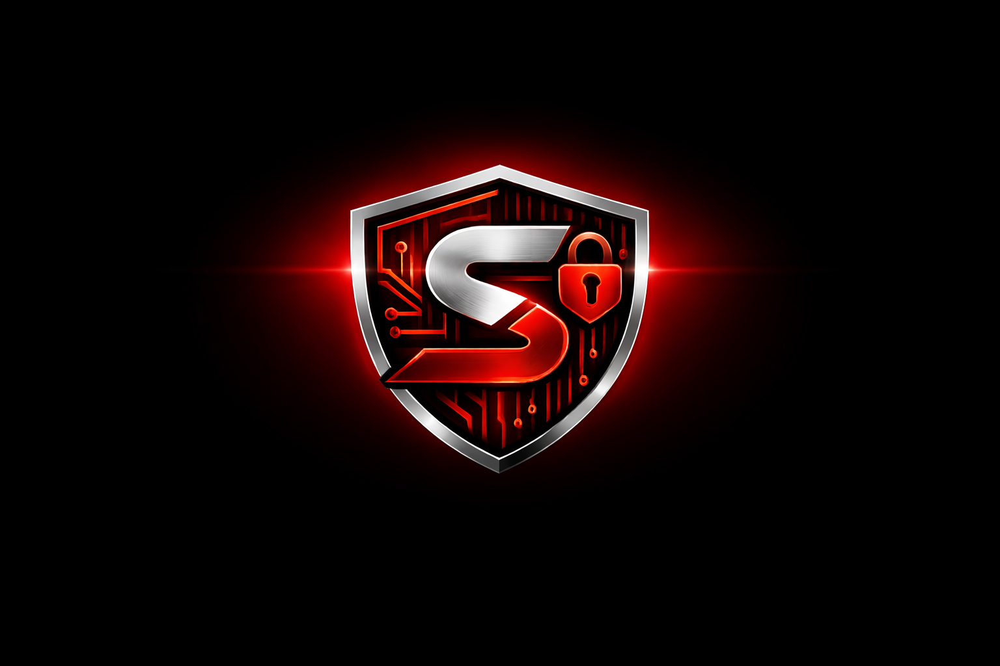

Cybersecurity Tools
Utilities for testing, analysis, and repeatable security checks.

SSRO // LabsPersonal Non-Profit Cybersecurity Lab
Where Security Meets Automation
Exploit • Automate • Secure
A personal initiative for publishing self-built cybersecurity tools, scripts, automation projects, and research notes.
About
SSRO // Labs is built from personal passion for cybersecurity, offensive security concepts, automation, and practical engineering.
It is not a company and does not provide commercial services, client work, paid engagements, or consulting.
Focus
Utilities for testing, analysis, and repeatable security checks.
Scripts that reduce repetitive work and support clean workflows.
Notes and experiments from self-directed technical learning.
Simple resources built around real engineering problems.
Work
Command-line helpers for parsing, checking, and security workflow support.
Small automation projects for faster and more consistent technical work.
Practical outputs from lab notes, experiments, and security research.
Repository
Code and notes will be published as open learning resources.
git clone https://github.com/ssrolabs
Contact